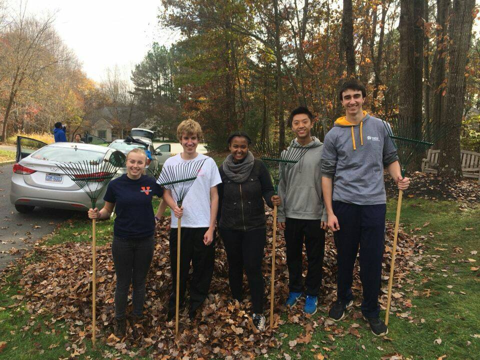
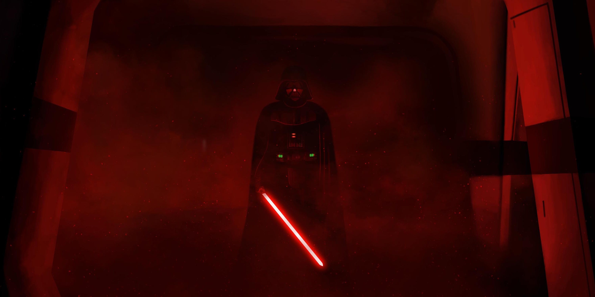

I am a first-year student at the University of Virginia studying computer science. I'm from Herndon, Virginia, and I can truly say I've found a new home at UVA. I live in the Brown Residential College, where we live in uniquely laid-out suites and participate in tons of activities (recent ones include watching Black Panther, dueling in a Nerf war, and renting out an entire trampoline park for a night). And it's really close to the dining hall, libraries, gym, and classes. You can usually find me in my room, in the library, or playing pool in the game room.
I'm also involved in the engineering community through Theta Tau, a professional engineering fraternity. I rushed my first semester, and I really enjoyed the friendship and mentorship of the brothers. Theta Tau is a great way for me to meet engineers outside of my major and get involved in community service for Charlottesville. The picture above is a few of us at the 2017 Habitat for Humanity Rake-a-thon!

I'm a huge Star Wars fan. Have a picture of Darth Vader from Rogue One.